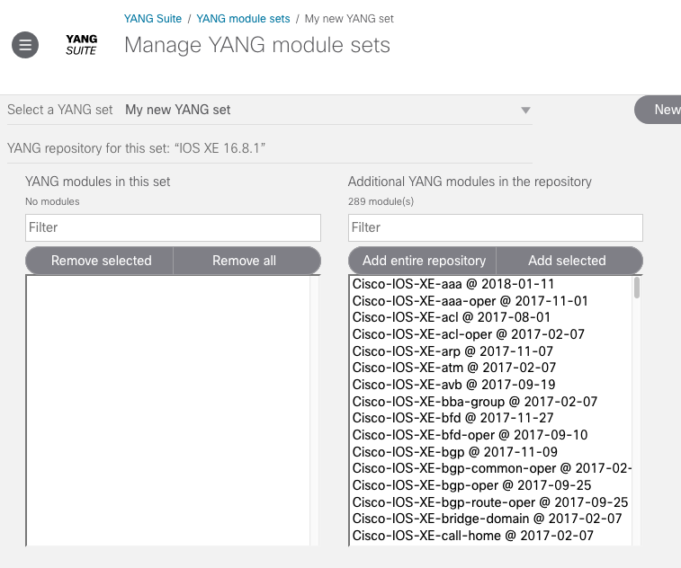
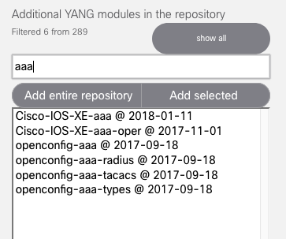
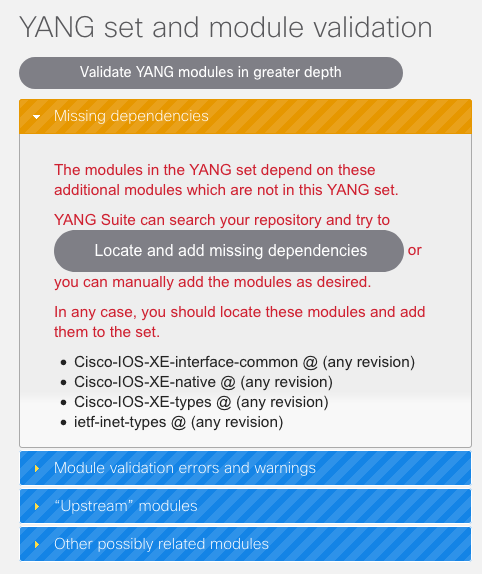

Defining a YANG module set¶
A YANG set is a subset of the YANG modules (also called models or schemas) contained in a given YANG module repository. For example, for a repository that contains “all YANG modules supported by a Cisco CSR1000V router running IOS XE 16.4.1,” you might have multiple YANG sets — “IOS XE BGP modules,” “OpenConfig and IETF modules,” “Tail-F modules,” etc.
From the sidebar, select “Setup → YANG module sets”.
Select “New YANG set”, enter a name for this set, and select the module repository that you previously populated with YANG modules. Select “Create YANG set” when ready.
When the page refreshes, you will see two columns of modules. The left column displays the YANG modules that this YANG set contains (initially none) and the right column displays all other YANG modules available in the repository that are not members of the set (initially the full contents of the repository).
You can filter the modules displayed in either list using the filter search boxes at the top of each column.
Select one or more modules in the repository and select “Add selected”. The listings will update to reflect this change, and the “YANG set and module validation” column to the right will refresh to display information about this set.
You may see any or all of the following sections in this column:
- Missing dependencies
The modules in your YANG set have dependencies on modules not included in the set, meaning the set is not “complete” and valid for parsing purposes.
You should address any issues reported in this section.
If the dependencies are present in the repository, you can click the “Locate and add missing dependencies” button for YANG Suite to locate and automatically add these dependencies.
If the dependencies are not present in the repository, you may need to return to “Setup → YANG files and repositories” in order to upload or download them.
- Module validation errors and warnings
Errors and warnings reported when inspecting the individual modules contained in this YANG set.
May contain more information if you select “Validate YANG modules in greater depth” to do a slower but more thorough validation.
You may be able to modify the YANG set to address these issues, or they may be issues with the YANG modules themselves.
- Modules providing derived identities
Additional modules in the repository that provide additional identities derived from the base identities defined in this set.
You should probably add these modules to your set.
- Augmenting modules
Additional modules in the repository that augment the modules in this set.
You should probably add these modules to your set.
- “Upstream” modules
Additional modules in the repository that depend on the modules you have added to this set but do not fit into any of the above categories; in other words these modules build on the functionality provided by the modules in this set, but are in no way needed for this set to function.
- Related modules
Suggestions of modules from the repository that are similar to or otherwise indirectly related to the current set contents.
These modules are in no way required, merely possibilities you may wish to include to expand the scope of this set.